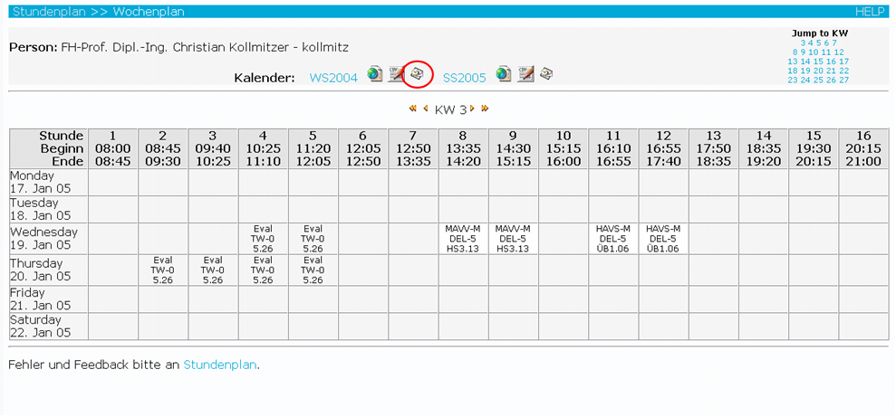

Bevor Sie die CSV-Datei in Outlook importieren können müssen Sie sie
zuerst aus dem Stundenplansystem exportieren.
Hierfür klicken Sie im Stundenplansystem auf das Outlook-Symbol und
speichern die Datei auf Ihre Festplatte.

Nachfolgend werden die nächsten Schritte anhand von Screenshots erklärt.
Starten Sie dazu Microsoft Outlook.